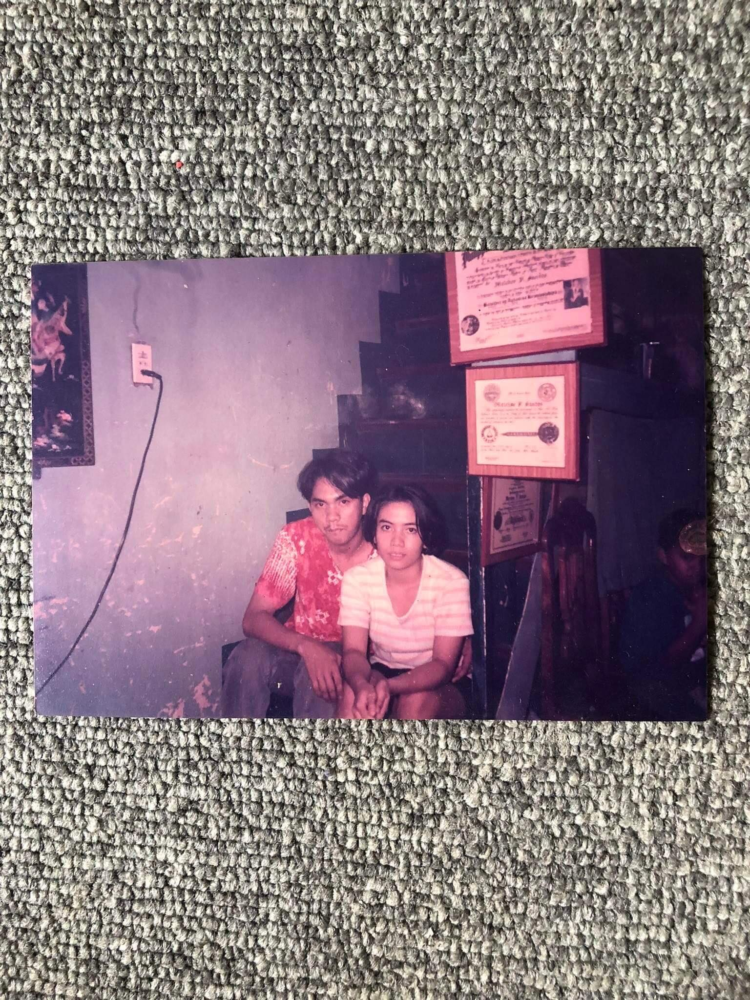
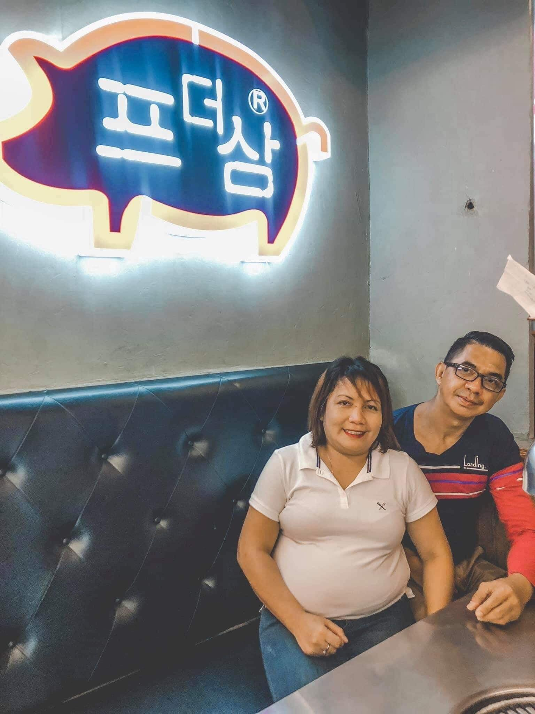

 
My mother's name is Marissa S. Intal and my father's name is Angelito P. Intal. Their story began when they met at their University. My father was a famous back then, and my mom was a transferee. My father didn't expect that he would be fall inlove with my mother when he first saw my mom. Even if my father was famous, my mom didn’t notice him. My mom was all focused to her studies. She's really into her studies that's why my father is very interested in her because unlike to the other girls, my mom is different from all of them. My father did everything he can to prove to my mom that they're meant to each other. To cut the long story short, he courted my mother. Eventually, they are the endgame of their own lovestory.
I know you'll be back soon,
Allyssa